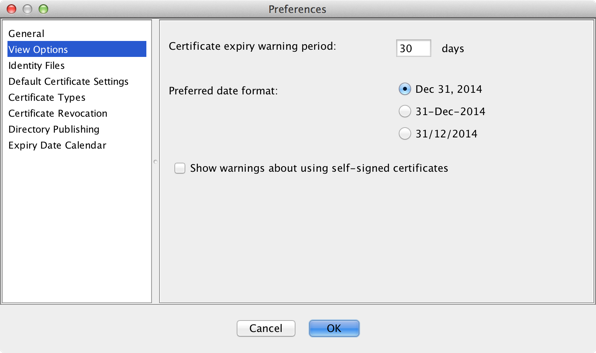
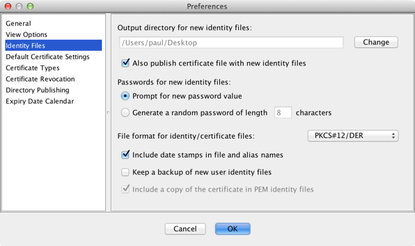
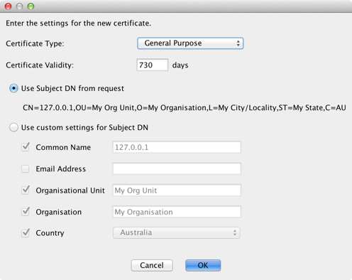
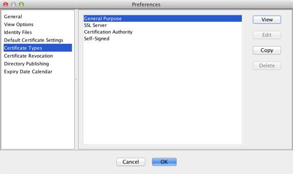
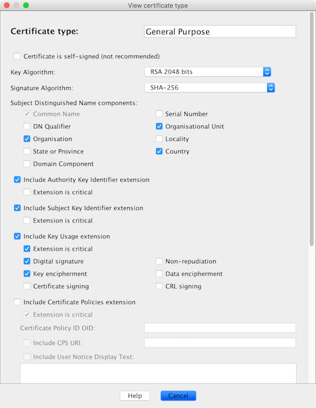

Generating Certificates
Certificate status
The main window displays a list of users and the list of certificates for the selected user. In each case, the certificate status of the selected item is indicated by the coloured circle in the Status column:
- green means that the certificate is valid and is not going to expire soon
- orange is a warning that the certificate is going to expire soon
- red means that the certificate has expired and can no longer be used.
Circles that have a red cross over them (e.g.  ) represent certificates that have been revoked and can therefore no longer be used. See
revoking certificates for details.
) represent certificates that have been revoked and can therefore no longer be used. See
revoking certificates for details.
Expired certificates can be hidden from view by selecting View > Hide Expired Certificates.
The certificate expiry warning period is configurable in Options/Preferences.

New certificates
A new certificate can be generated for the selected user by clicking on the New Certificate button or by selecting File > New Certificate. The selected user must be active before a new certificate can be generated.
The new certificate contents will be based on the current settings for the selected user, shown at the top right of the main window. The certificate key length and signature algorithm is controlled from Default Certificate Settings in Options/Preferences.
Generating a new certificate involves generating the corresponding identity file (.p12 for PKCS#12
format). This file includes the private key, protected by a password. It is written to the output directory defined
in the Identity Files section of Options/Preferences.
The identity file password can be randomly generated or it can be set manually. When a randomly generated
password is used the password is written to a text (.txt) file alongside the identity file.
The Identity Files section of Options/Preferences also lets you control:
- if the certificate file (
.cerfor DER format) will also be written to the output directory - which can be useful if you need to distribute the certificate such as for encryption purposes - the encoding format for new identity and certificate files - either PKCS#12/DER which is appropriate for most applications, PKCS#12/PKCS#7, or PEM with or without a password
- if a date stamp will be included in file names and key alias names - which can be used to help distinguish between old and new keys and certificates for the one user
- if a copy of the identity file should be retained for backup/future recovery purposes.

Once a new certificate has been generated, the identity file and corresponding password must be sent to the owner of the keys. For security reasons, these two pieces of information should not be sent together, and preferably not using the same communications channel. A recommended approach is to email the identity file to the user and to tell them or SMS them the password.
Certificate signing requests
SimpleAuthority supports the processing of Certificate Signing Request (CSR) files. CSR files can be generated by applications including IIS, Cisco routers and most Hardware Security Modules (HSMs). They include information for a requested new certificate including the certificate public key.
Select Import > Certificate Signing Request... from the menu bar to process a certificate signing request. You will be prompted to select the resulting certificate type and the certificate validity period. You will also be given the option of using the original CSR request to specify the user certificate details, or overriding these with custom settings.

Some certificate signing requests include certificate extensions that are requested for the final certificate. In these cases, an "Include extension requests from CSR" check box is provided for selecting whether the requested extensions should be included.
When a certificate signing request is processed, a new user entry is automatically created if required to register the new certificate with.
Certificate types
Certificates contain numerous fields, including extensions that provide additional information about a certificate owner and in some cases control what the certificate can and cannot be used for. To avoid having to work out what each extension does and which ones need to be used, SimpleAuthority uses "certificate types". The certificate type is effectively a template for what gets included in the certificate, as recommended by standards such as rfc5280 and as required to maximise interoperability.
The default certificate types are:
- General Purpose - suitable for secure email, VPN access, client SSL authentication, code signing and most other client applications
- SSL Server - designed to be used by a web server
- Certification Authority - intended for use by subordinate CAs (see CA hierarchies)
- Self-Signed - the same as General Purpose certificates, except these certificates are self-signed instead of being signed by a Certification Authority (not recommended for use unless you have a specific need for self-signed certificates).
Custom certificate types
(License required) Certificate types can be customised under Certificate Types in Options/Preferences, or by selecting Advanced Settings... when generating a new self-signed CA. The default certificate types (listed above) cannot be deleted or modified, however they can be copied to generate a new certificate type with customised settings.

Select View, Edit or Copy to open a dialog containing certificate type configuration settings.

The first few settings control the name of the certificate type, whether the certificate is self-signed or not, and the cryptographic algorithms to use. Following this are the user details that should be included in the certificate subject distinguished name, for identifying the owner of the certificate. The remaining settings relate to certificate extensions that may be included in the certificate. These control which extensions are used, whether or not an extension is marked as critical, and the extension contents.
From rfc5280, marking an extension as critical has the following effect:
A certificate-using system MUST reject the certificate if it encounters a critical extension it does not recognize or a critical extension that contains information that it cannot process. A non-critical extension MAY be ignored if it is not recognized, but MUST be processed if it is recognized.
A summary of what each of the certificate extensions is used for is shown below. Refer to rfc5280 for further details.
| Extension name | Recommendation | Details |
|---|---|---|
| Authority Key Identifier | Include, mark non-critical | Includes a hash of the issuing CA public key, which is useful for security applications when constructing certificate chain paths. |
| Subject Key Identifier | Include, mark non-critical | Includes a hash of the certificate public key, which is useful for security applications when constructing certificate chain paths. |
| Key Usage | Include, mark critical | Specifies what the certificate can be used for. |
| Certificate Policies | Include if needed | Includes information about the organisational policy under which the certificate has been issued. Includes an Object Identifier (OID) that uniquely identifies the policy. Optionally also includes a URI to the Certification Practice Statement (CPS) document and/or summary text that is included in the certificate. |
| Subject Alternative Name | Include if needed, mark non-critical | Includes extra information about the user. Can be used to specify one or more Email Address, DNS Name, URI or IP Address values (see Managing Users for specifying multiple values). Must be included in the certificate to specify a user's email address if the certificate is used for secure email (S/MIME) purposes. |
| Basic Constraints | Include, mark critical for CA certificates | Identifies whether the certificate can act as a CA, i.e. issue other certificates. |
| Extended Key Usage | Include only if use must be restricted | Provides restrictions on what the certificate can be used for beyond the Key Usage extension. If this extension is included, then a certificate may only be used in a manner that is consistent with both the Key Usage and Extended Key Usage values. |